Highest Rated Chess Victory
Apr 24, 2025
Hello everyone, I've been posting about academics recently, so I wanted to post about something related to my hobbies.
If you've known me for a long time or personally, you probably remember that I'm decent at chess. As a kid, I read many chess books and have even seen my games posted in magazines. I've always wanted to recap games like that, so I wanted to recap my highest rated game that I played recently at USATE 2025.
Just as a preface, my opponent's name was Robert King. He looked about late 40-50's, and his rating was around 2150. I played black, and my opponent played white. USATE is a team-based event, and CMU sent 3 teams to compete. I was second board on Team C, and our record was around 1.5/3.
For this round, about halfway through my game, boards 3 and 4 have already drawn, and I saw my friend Henry Siegel was somehow holding on against an FM. The team we were playing against was one of the top 3 highest rated teams in the tournament, and if I won and Henry drew, then we would upset them.
1. d4 Nf6 2. c4 g6 3. Nc3 Bg7 4. e4 d6 5. Nf3 O-O
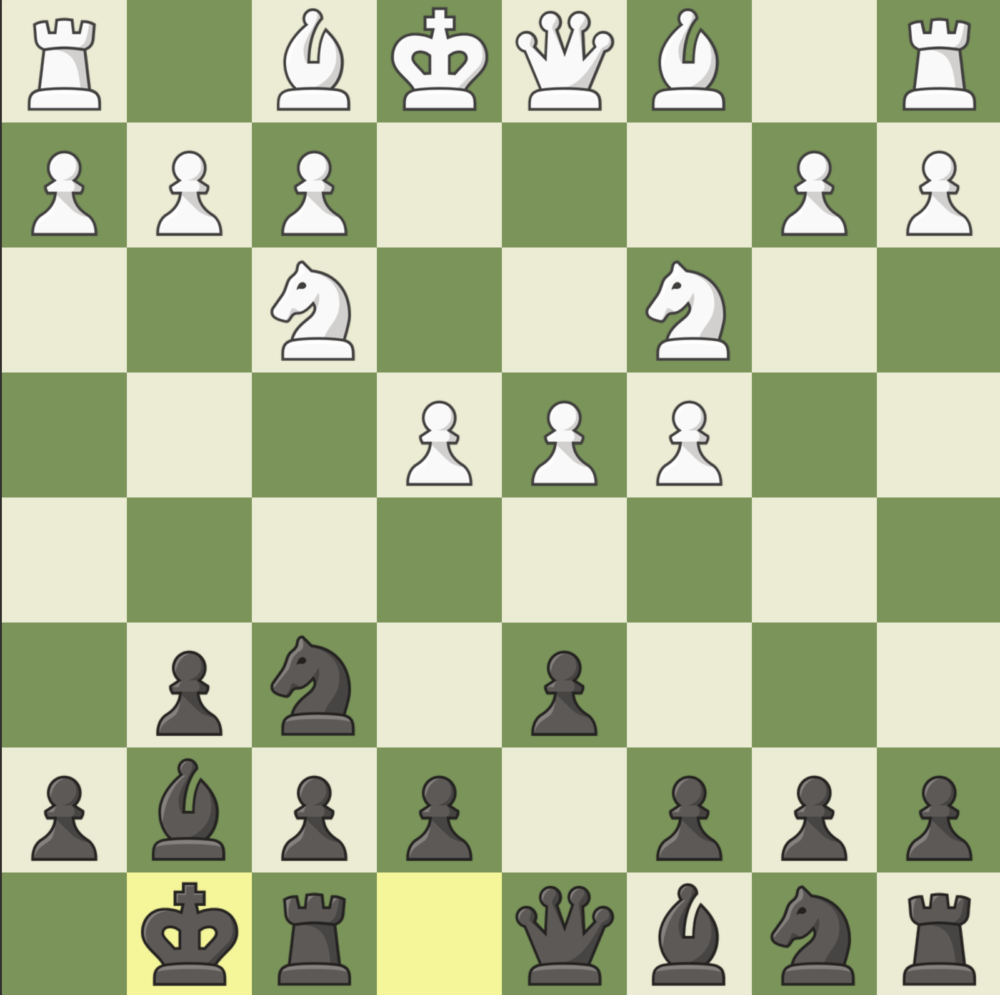
Very classic King's Indian Defense (KID). Fortunately for me, this is the only opening I actually remember, and I was fortunate that 2/3 of my black games were with the KID. However, this is around where my opening knowledge ends. My only plan at this point is to somehow play e5 and send the pawns on the kingside. However, I'm scared of playing e5 since 6. Be2 e5 7. xe5 ... is a very sharp line that I have no idea how to play. Therefore, I cop out for the more safe (and pussy) option.
6. Be2 Nbd7 7. O-O e5 8. dxe5 dxe5 9. Qc2 c6 10. Rd1 Qc7 11. b3 Re8
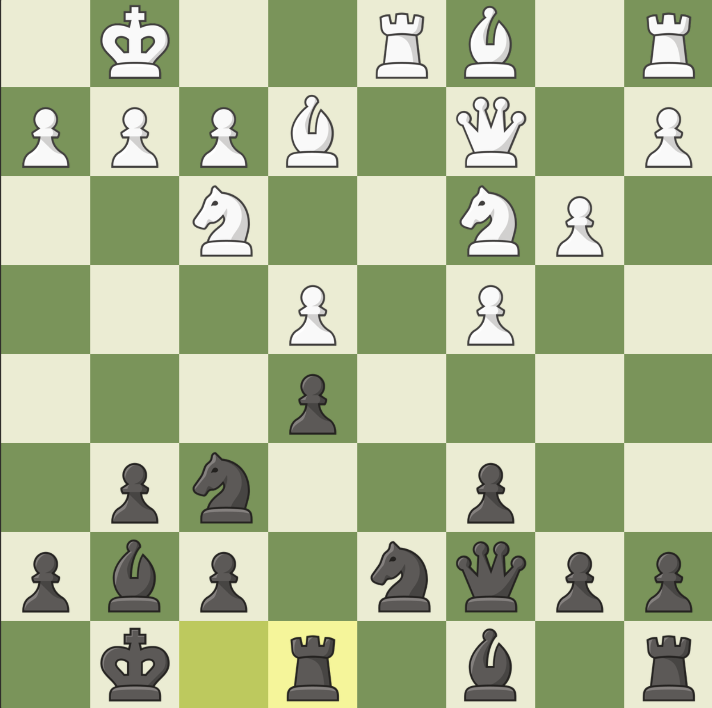
I'm not gonna lie, I have no idea what I'm doing past move 9. I'm completely out of book, but somehow, I'm playing top engine moves.
12. Bb2 b6 13. Bf1 Nh5
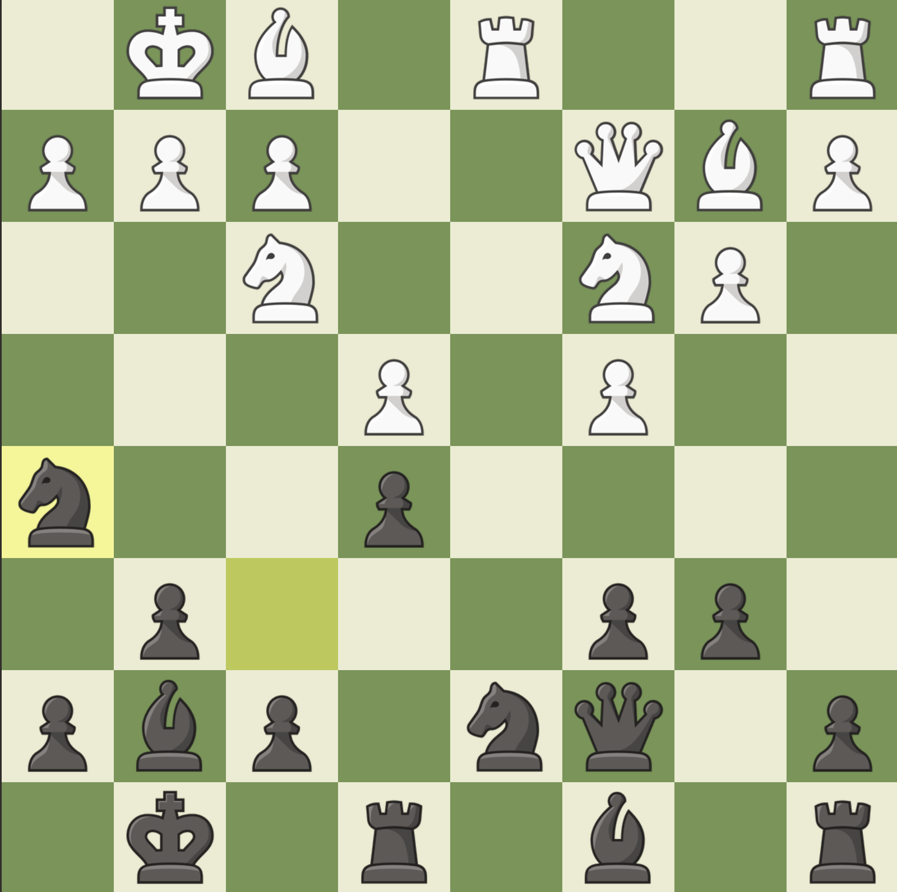
At this point, I'm a little curious what my opponent is doing. 12. Bb2 seems logical to just develop his bishop, and I played b6 since my bishop on c8 looks a little dead. Also, many players try some c5 bs against me, and I think b6 always prevents any ideas there. Then, this guy plays Bf1, which is completely mind-boggling to me. I'm not exactly sure what he's trying to do, but I'm also out of ideas. However, whenever I'm out of ideas, I always just send f5 and hope for the best.
It's also at this point in the game where I start seeing things. If he's not careful, he might allow Ne8, Ne6, and my two knights are somehow monstrous. Then, the position is completely dominated, and I just wait until I can push f5.
14. b4 Nf8 15. b5 Bg4 16. xc6 Bxf3 17. xf3 Qxc6
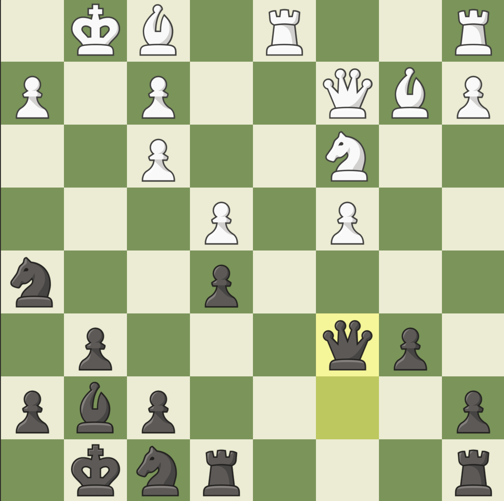
My opponent's position looks completely cooked now. I finally felt like I had some winning chances. His light square bishop is pretty much dead, his double pawns on the f file completely blockade all his pieces, and my knights are dominating in like 1 or 2 moves. My only concern is Nd5, but after I thought about it a little, I realized his knight on d5 is completely worthless. It just looks a little bit daunting.
18. Nd5 Ne6 19. Rab1 ...
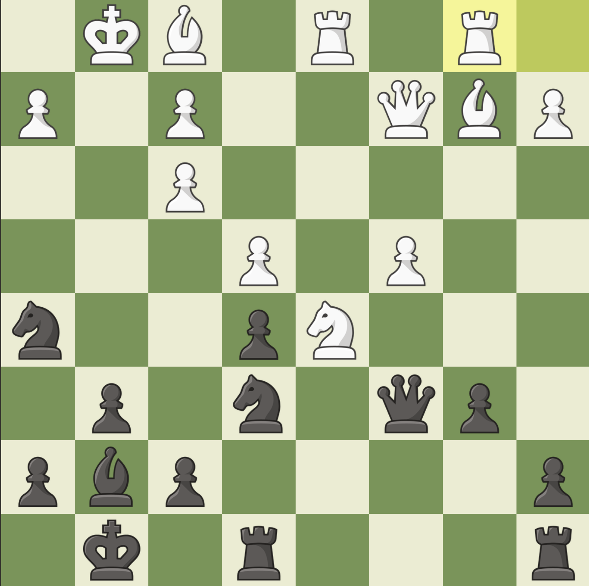
Now is when I have to actually start calculating. He's definitely plotting some nasty Bb5 nonsense with Ba3 and Ne7 and c5. Here's one of the lines I calculated:
19. ... Nhf4 20. Ba3 Kh8 21. c5 ...
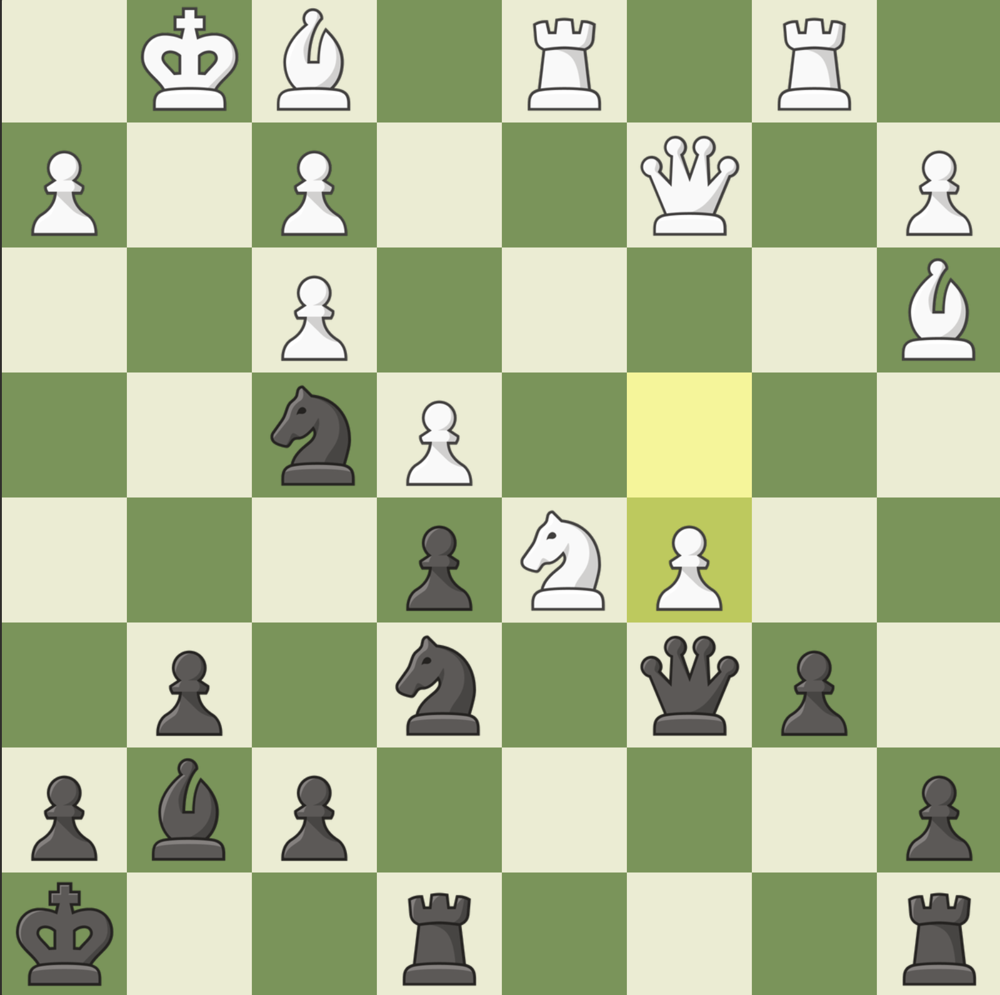
This position looks doomed for me. My queenside is completely collapsing. Apparently the engine wants me to not play Kh8 and just give up the exchange when he plays Ne7+. It makes no sense to me, so I decided to avoid it entirely.
Instead, I try to avoid all this nonsense and keep his light squared bishop dead. The engine doesn't like my next move very much, but I think it stabilizes everything.
19. ... Nc5 20. Qd2 Kh8 21. Qe3 Rad8 22. Qa3 Rd7 23. Bc1 f5 24. Be3 Bf8 25. Bxc5 Bxc5
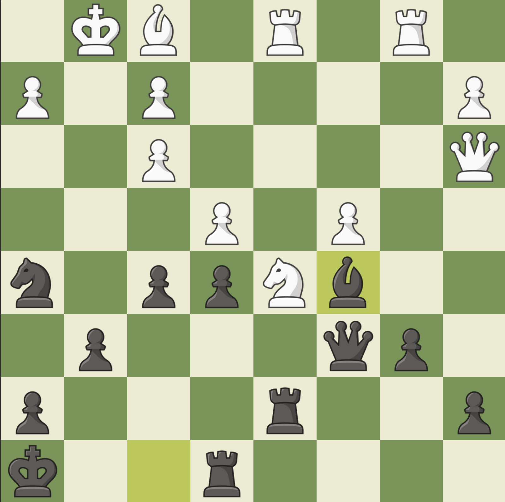
Now he's completely dead. The last 5-6 moves were terrible by him. After the game, he talked to me a little, and he said he literally just ran out of ideas. I also had that feeling since he made 3 consecutive queen moves that essentially did nothing. Meanwhile, I get my pieces to the most optimal squares. I had ideas of pushing f5 along with swinging my rook to f7, busting the kingside open either with me playing xe4 or him playing xf5. I also still have ideas of playing Nf4.
However, he opts for 25. Bxc5, which is probably the worst move he can play in this position. Now, my dark-squared bishop completely takes over the game, while his light-squared bishop is still hiding on f1. I can still bust open the kingside and swing my rooks over. I'm not sure what counterplay he has left. Perhaps he needs to try to trade queens on b5 or something.
Now, I just need to swing my pieces over to the kingside and bust it open. Then, I can just attack f2 and his position collapses.
26. Qb2 xe4 27. xe4 Rf7 28. Rd2 Nf4 29. Rbd1 Qc8
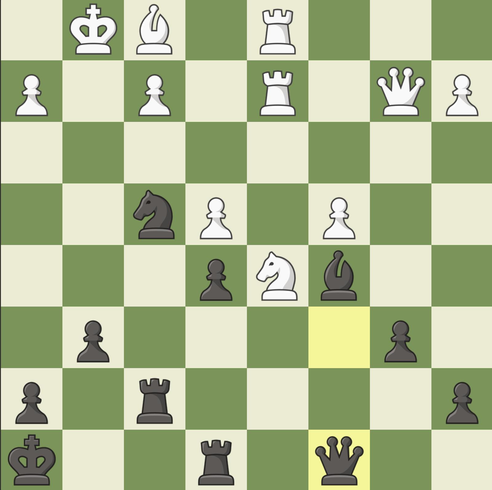
To be honest, I started pissing my pants a little in this position. Just for clarification, we were playing classical time control (100 minutes each) with additional time control at 40 moves. I looked at the clock, and I had around 30 minutes left, so it was around 2 minutes per move. I thought there may be another crucial position that would require more thinking, so I tried moving a bit faster. At around move 26, I had already calculated this line, so I immediately blitzed out Qc8 on move 29.
However, my opponent started thinking for like 10-15 minutes here, and I also looked at the position and started seeing things. What I looked at (and what my opponent was probably looking at) was
30. Nxf4 Rxf4 31. Rd8! Rxd8 32. Qxe5+ Kg8 33. Rxd8+ Qxd8 34. Qxf4
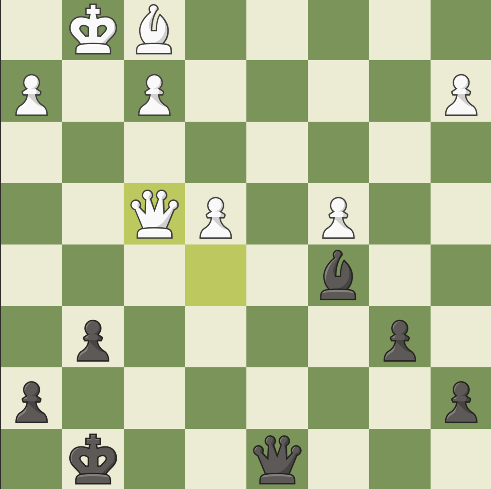
and now his position is completed stablized. He may be even better.
I thought that I had completely blundered the game, and so I tried putting on my best poker face and seeming confident in my move. After a little more calculation, I realized I was completely safe after a brilliant move. The line goes as following:
30. Nxf4 Rxf4 31. Rd8! Qe6! 32. Rxe8+ Qxe8 33. Rd8 Qxd8 34. Qxe5+ Qf6!
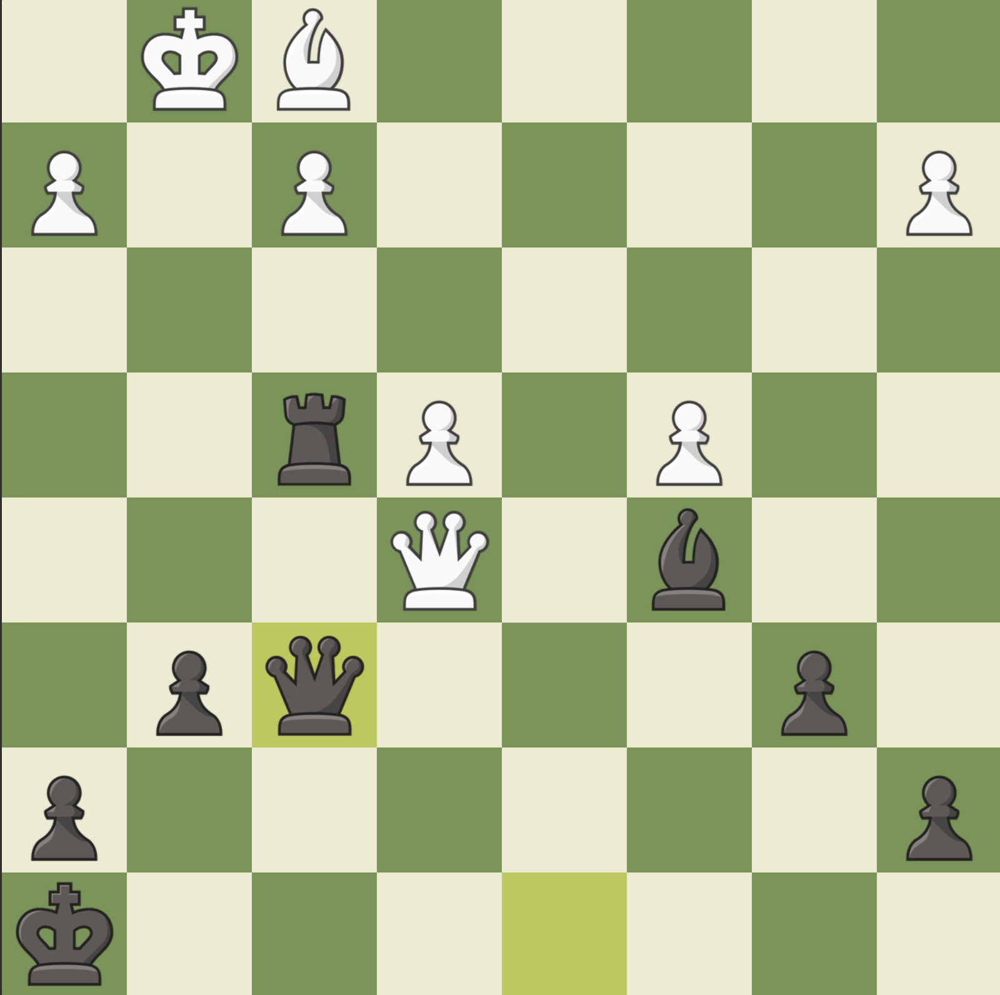
The saving grace is Qe6 after Rd8. After about 5 minutes of calculation, I realized I had this resource, and he actually has nothing. The computer also says that 29. ... Qc8 is top move, so luckily, my intuition about this move was correct.
Continuing with the game, we have
31. Bg2 Qe6 32. Rf1 Qxc4 33. Rd8 Qe6
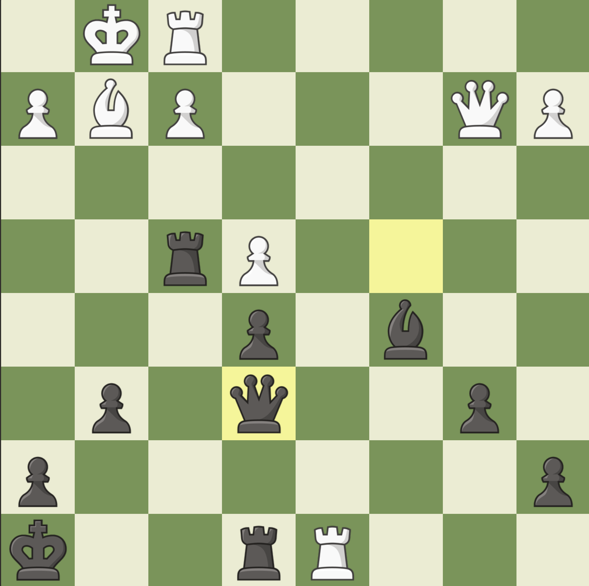
lmao he goes for the cheese anyways. Luckily I had already calculated a variant of this line, so I knew that Qe6 was good defense.
34. Qb3 Qe7 35. Rxe8+ Qxe8 36. Qd5 Bd4 37. Rd1 Bxf2+
At this point, I'm just slow-burning this guy. Two pawns up and he has no compensation. The plan is to just trade everything down and win an endgame. I'm terrible at endgames, but I thought that even I could surely convert an endgame being two pawns up.
I'll speed through the rest of the game and show the funny positions since it's mostly just me trying to trade and him trying to dodge.
38. Kh1 Bd4 39. Rc1 Qf7 40. Qd8+ Qf8 41. Qd7 Rf7 42. Qd5 Kg7 43. Qc4 Qc5 44. Qxf7+ Kxf7 45. Rxc5 Bxc5
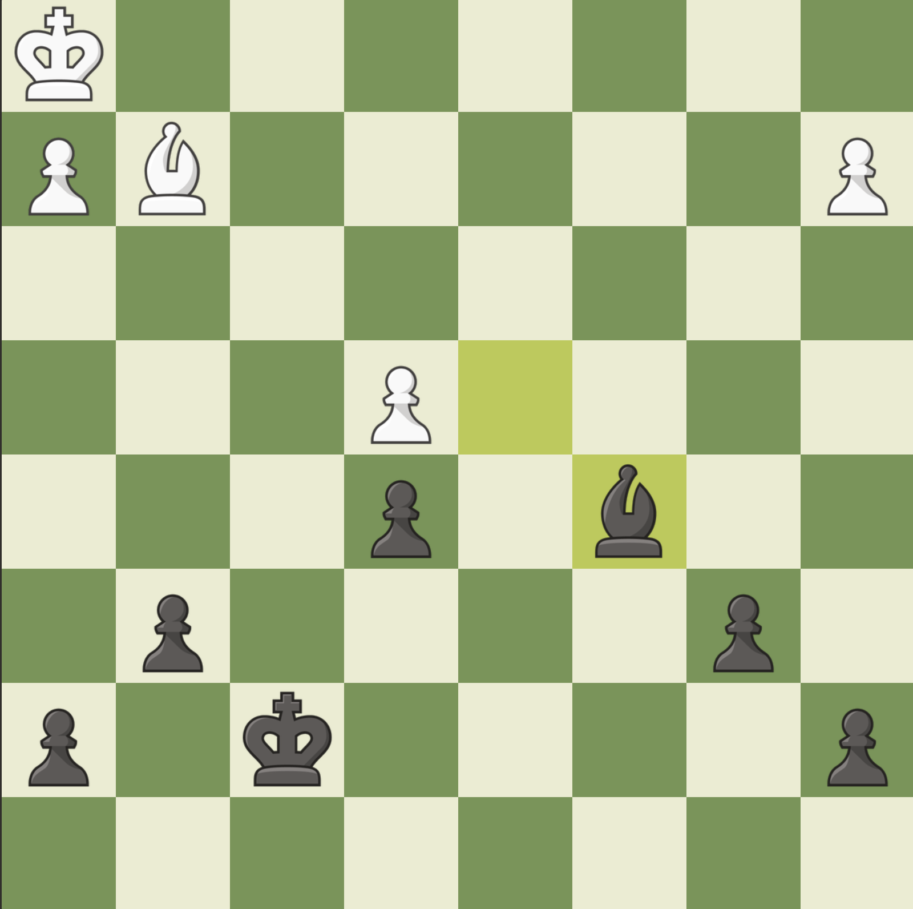
Bro offered me a draw in this position. I feel like that's crazy disrespect. I felt like if I drew this game I might be getting banned from CMU Chess Club.
46. Bf1 Kf6 47. Kg2 g5 48. Bb5 g4 49. h3 Kg5 50. xg4 Kxg4 51. a4 Kf4 52. Bc6 h5 53. Kh3 Bf2 54. Bb7 Ke3 55. Kg2 h4 56. Bc6 Bg3 57. Bb7 Kd4 58. Kf3 Kc5 59. Bc8 Kb4 60. Bd7 a6 61. Ke2 b5 62. xb5 xb5 63. Kd2 Bf2 64. Kc2 Kc4 65. Be6+ Kd4 66. Bf5 Ke3
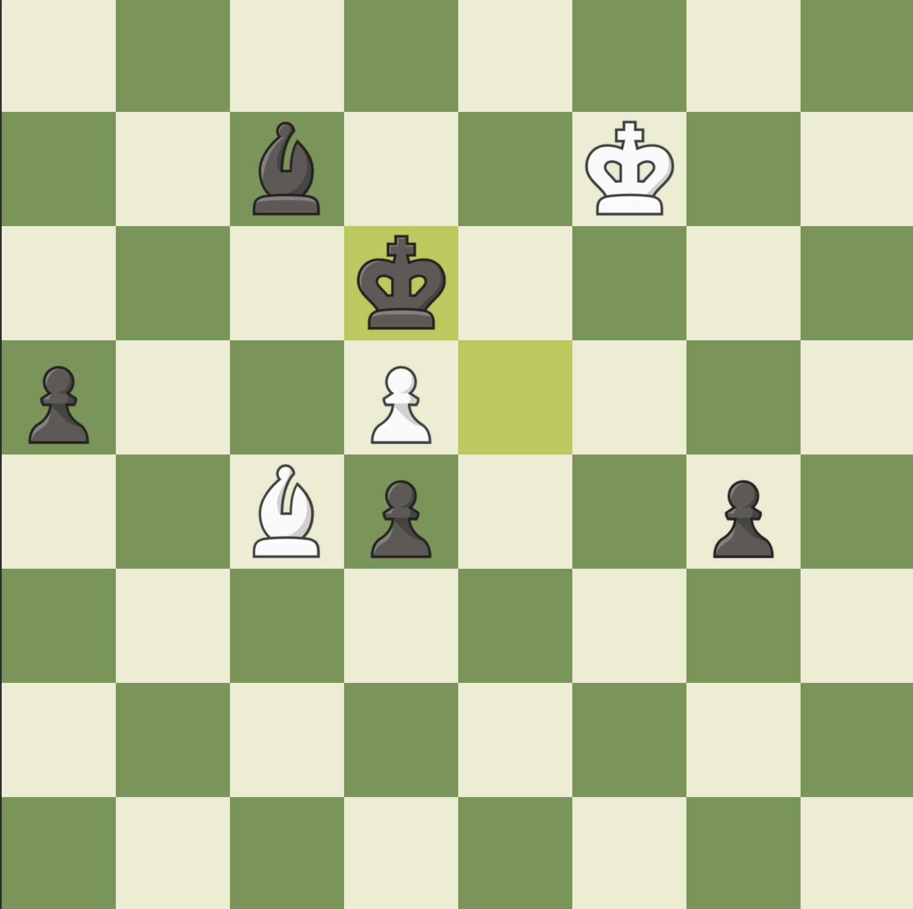
In this position, my opponent finally resigned the game. He essentially just shuffled his king and bishop back and forth while I marched my king forward and traded off pawns. He can't really stop my king from getting to g3 and then simply pushing h3, h2, h1.
Overall, I thought I played a really nice game. Opening was my favorite opening, middle game was positionally crushing, and endgame just played itself. Although my opponent was definitely not at his top form, I felt like this was one of my best games. My playstyle is usually very aggressive and reckless, but this was more of a strategic and positional game, where I just squeezed him to death.